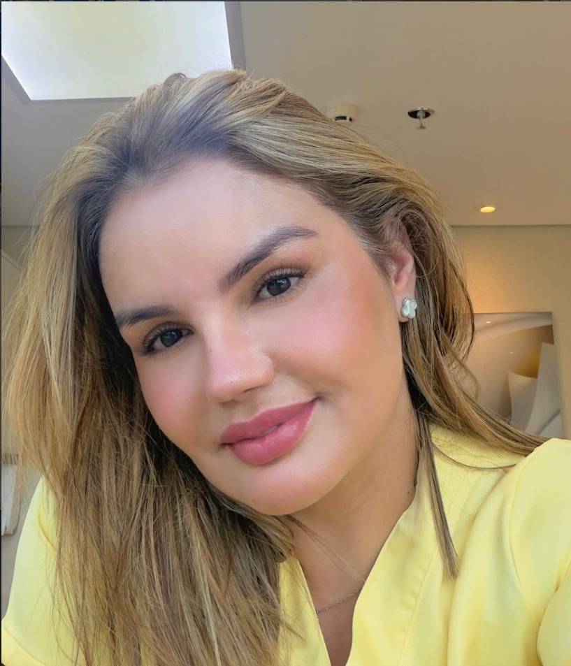

Tratamentos especializados com técnicas exclusivas para resultados reais. Cuido da sua recuperação com dedicação e expertise de quem é referência no mercado.
Pacientes atendidas
Anos de experiência
Satisfação

Anos de experiência
Formada com especialização em fisioterapia dermatofuncional, minha paixão sempre foi devolver a confiança de cada paciente. Ao longo de mais de uma década, desenvolvi técnicas exclusivas que unem ciência e sensibilidade, entregando resultados que transformam vidas.
Cada protocolo é personalizado, porque acredito que cada corpo merece atenção única. Meu compromisso vai além do tratamento — é com a sua autoestima.
Cada procedimento é planejado com cuidado, utilizando as técnicas mais avançadas do mercado para garantir sua recuperação ideal.
Recuperação completa após cirurgias plásticas com protocolos personalizados que aceleram a cicatrização e garantem os melhores resultados.
Agendar consulta →Técnica manual especializada que reduz inchaços, melhora a circulação e promove a desintoxicação do corpo. Ideal para pré e pós-cirúrgico.
Agendar consulta →Protocolos avançados para tratar fibroses pós-cirúrgicas com resultados visíveis. Técnicas exclusivas que devolvem a uniformidade da pele.
Agendar consulta →Redução e suavização de cicatrizes com técnicas combinadas que melhoram a aparência e a textura da pele de forma progressiva.
Agendar consulta →Cuidados especiais para a recuperação pós-parto, incluindo drenagem, fortalecimento da região abdominal e restauração corporal.
Agendar consulta →Pacote completo combinando múltiplas técnicas em um tratamento exclusivo. Avaliação individual com plano 100% personalizado.
Agendar consulta →Cada resultado é uma história de transformação e confiança restaurada.
Pacientes atendidas
Satisfação garantida
Sessões realizadas
De experiência
"Fiz uma lipo e estava com muita fibrose. Depois de 10 sessões, minha pele ficou lisinha! Ela é incrível, super cuidadosa e profissional. Recomendo demais!"
"Depois da minha abdominoplastia, a recuperação foi muito mais rápida do que eu esperava. O tratamento é completo e ela explica cada etapa com muita paciência."
"Fui fazer a drenagem pós-parto e me apaixonei pelo atendimento. Ela é extremamente dedicada e os resultados apareceram muito rápido. Me senti outra mulher!"
Capacite-se com meu método exclusivo de tratamento pós-operatório. Cursos práticos, com conteúdo atualizado e mentoria de quem já atendeu mais de 2.500 pacientes.
Dicas, orientações e informações para cuidar da sua recuperação com segurança.
Descubra os cuidados essenciais no pós-operatório que previnem a formação de fibroses e garantem uma recuperação suave.
Saiba mais →Entenda o número ideal de sessões para cada tipo de procedimento e como otimizar seus resultados com drenagem linfática.
Saiba mais →Evite esses erros que podem comprometer sua recuperação e prejudicar os resultados da sua cirurgia plástica.
Saiba mais →Entre em contato e agende sua avaliação. Estou pronta para cuidar da sua recuperação com todo o carinho e profissionalismo.